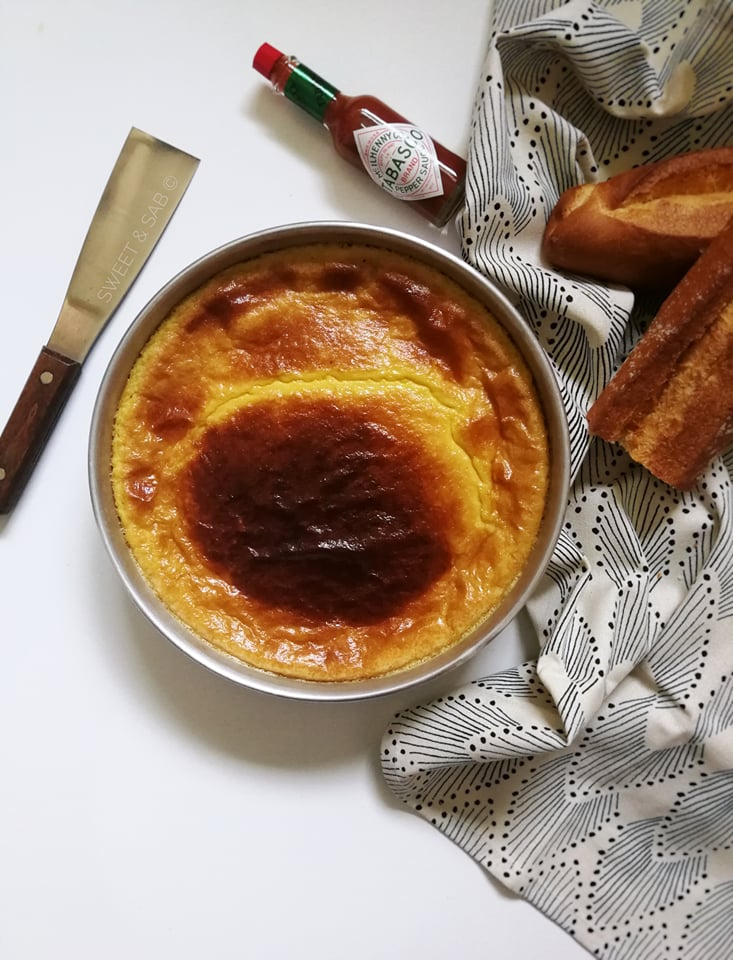

To start our taste buds, nothing beats chickpeas @ garantita .

Description
"Algerian dish of Hispanic-Oranese origin made from chickpea flour, resembling a flan."
As an appetizer, nothing beats a small chickpea gratin. Usually, it's a meal on its own, but I promise we'll serve just a bit for the starter.
Ingredients
- Milk (3 cups)
- Olive oil (0.5 cup)
- Eggs (2 px)
- Chickpea flour (1 px)
Steps
- Mix all the ingredients together, season with salt, pepper, and cumin.
- Let the mixture rest for at least 6 hours in a buttered mold, and blend every 2 hours.
- Blend again and bake in a preheated oven at 240°C (th.8) for 30 to 35 minutes.
Don't fill up quick ... Let's pass to the real solid part ! Tajine is waiting for us
Another piece! or
Return Home